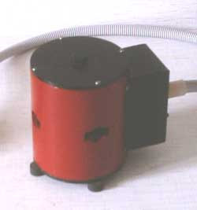
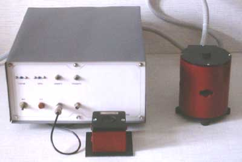

Устройство для
импульсного намагничивания и размагничивания
редкоземельных магнитов диаметром до 25 мм высотой до 12 мм

Назначение
Устройство намагничивающее импульсное предназначено для работы
в составе установок намагничивания [5] в комплекте с различными генераторами
мощных импульсов тока [2 - 4] и установок размагничивания в комплекте с
биполярным генератором мощных импульсов тока [2] (полное размагничивание) или
емкостным накопителем энергии [4] (частичное размагничивание). Оно позволяет
намагничивать и размагничивать постоянные магниты состава неодим-железо-бор и
самарий-кобальт, а также ферритов марок БА, СА, РА и сплавов ЮНДК. Кроме этого,
устройство может быть использовано в качестве электромагнита для изучения
магнитных свойств материалов с регулируемым блоком питания [1].
Технические данные:
- размеры зоны намагничивания: диаметр - 25 мм, высота - 12
мм
- направление намагничивания - по высоте
- амплитуда магнитной индукции в зоне намагничивания до 3
Тл при амплитуде импульса тока не более 1200 А
- неоднородность магнитного поля в зоне намагничивания не
более 5 %
- длительность импульса тока не более 30 мс
- форма импульса тока произвольная (синусоидальная,
колоколообразная и т. п.)
- максимально допустимая амплитуда импульса тока 1500 А
- готовность к работе - сразу после включения
- средняя потребляемая мощность при частоте следования
импульсов тока амплитудой 1200 А и частотой 0.1 Гц не превышает 200 Вт
- производительность: до 150 циклов намагничивания в час
- габаритные размеры не более 130 х 200 х 155 мм3
- масса не более 7 кг
Устройство состоит из стального цилиндрического корпуса с
верхней и нижней крышками. К крышкам крепятся стальные сердечники, на которые
надеты катушки. Выводы катушек подключены к питающему кабелю. Места контактов
закрыты кожухом. Для доступа к зоне намагничивания (рабочей зоне) в корпусе
прорезаны три отверстия. Подача магнитов в зону намагничивания может
осуществляться с помощью специального контейнера.

Рис. 1. Внешний вид установки намагничивания в комплекте с
однополярным генератором мощных импульсов тока.

Рис. 2. Внешний вид установки намагничивания и размагничивания
в комплекте с биполярным генератором мощных импульсов тока.
Ссылки:
- Блок питания электромагнита
регулируемый
- Генератор мощных
импульсов тока биполярный
- Генератор мощных
импульсов тока однополярный
- Генератор мощных импульсов
тока (емкостной накопитель энергии)
- Установки
импульсного намагничивания и размагничивания постоянных магнитов
Словарь
терминов:
- Ални, альни (англ. Alni) - магнитотвердый сплав
алюминия, никеля и железа, получаемый методами литья или порошковой
металлургии. Свойства и обозначение зависят от соотношения элементов и
способа получения. Применяется для изготовления постоянных магнитов. См.
также ЮНД, ЮНДК.
- Генератор импульсов - прибор или устройство для
создания последовательности импульсов.
- Импульсный генератор - генератор
импульсов напряжения или тока.
- Магнитная индукция - вектор, численно
равный пределу отношения силы, действующей со стороны магнитного поля на
элемент проводника с электрическим током, к произведению тока и длины
элемента проводника, если длина этого элемента стремится к нулю, а элемент
так расположен в поле, что этот предел имеет наибольшее значение, и
направленный перпендикулярно к направлению элемента проводника и к
направлению силы, действующей на этот элемент со стороны магнитного поля,
причем из его конца вращение по кратчайшему расстоянию от направления силы к
направлению тока в элементе проводника должно быть видно происходящим против
часовой стрелки.
- Магнитная система - магнитная цепь.
- Намагничивание
- воздействие на образец магнитным полем, вследствие которого у образца
появляется отличная от нуля остаточная намагниченность.
- Неодим-железо-бор
(англ. Ne-Fe-B) - магнитотвердый материал на основе соединения железа,
неодима и бора состава Nd2Fe14B, Nd3Fe16B,
Nd4Fe28B3.
- Постоянный магнит - объект, создающий
магнитное поле за счет собственных внутренних элементарных электрических
токов, текущих без использования внешнего источника энергии в составляющем
объект материале.
- Размагничивание
- процедура, позволяющая уменьшить остаточную намагниченность образца до
таких значений, когда ею можно пренебречь.
- Самарий-кобальт
(англ. Sm-Co) - магнитотвердый материал на основе интерметаллического
соединения самария и кобальта состава SmCo5. В обозначении марки
(например, КС37) буквы обозначают состав (К - кобальт, С - самарий), а число
(37) - процентное содержание самария.
- Феррит бария - магнитотвердый материал
на основе окислов железа и бария состава BaO·6Fe2O3. В
обозначении марки (например, 19БА190) первое число (19) обозначает
энергетическое произведение (в кА·Тл/м), первая буква - состав феррита (Б -
бариевый), вторая буква - свойства (А - анизотропный, И - изотропный),
второе число (190) - коэрцитивную силу по намагниченности (в кА/м).
- Феррит стронция - магнитотвердый
материал на основе окислов железа и стронция состава SrO·6Fe2O3.
В обозначении марки (например, 28СА250) первое число (28) обозначает
энергетическое произведение (в кА·Тл/м), первая буква - состав феррита (С -
стронциевый), вторая буква - свойства (А - анизотропный, И - изотропный),
второе число (250) - коэрцитивную силу по намагниченности (в кА/м).
- ЮНД, ЮНДК - отечественное обозначение группы
магнитотвердых сплавов на основе железа, алюминия, никеля, кобальта с
легирующими добавками, получаемых методами литья (сплавы ЮНД, ЮНДК) или
порошковой металлургии (металлокерамические сплавы ММК). Буквы в обозначении
марки сплава обозначают: Ю - алюминий, Н - никель, Д - медь, К - кобальт, Б
- ниобий, С - кремний, Т - титан, а цифры - процентное содержание элемента
(железо не обозначается). Применяются для изготовления постоянных магнитов.
См. также ални, алнико.
18.03.2004
12.09.2005
26.01.2006
23.06.2010
Альтернативные источники
энергии
Компьютеры и
Интернет
Магнитные поля
Механотронные системы
Перспективные
разработки
Электроника и
технология
Главная страница